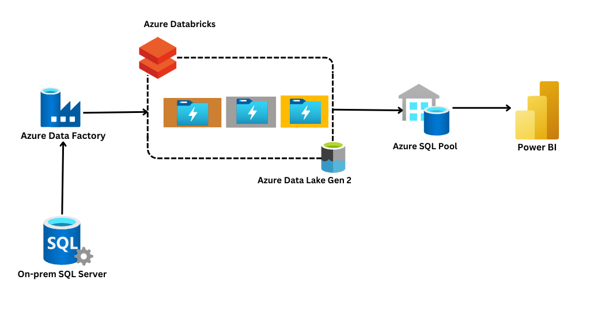

Migrating on-premises SQL server data to cloud using Azure resources

- In this project Azure Data Factory is used for data ingestion- ADF will connect to the on-prem SQL server to copy all the data to the initial landing container.
- A low cost reliable data storage solution Azure Data Lake Gen 2 is used for initial arrival, storage and retrival of the data.
- A medallion architecture is followed, for Extraction ADF is used, Databricks is used in silver and Gold layers for Transformation and finally for loading Azure Synapse is used.
- Once the data is loaded in to the Synapse, using the POWER BI dashboards are created for the business.
- Inaddition to the warehousing, data processing, application security and access governance is implemented by Azure Entra ID by creating the IAM roles and service principals.